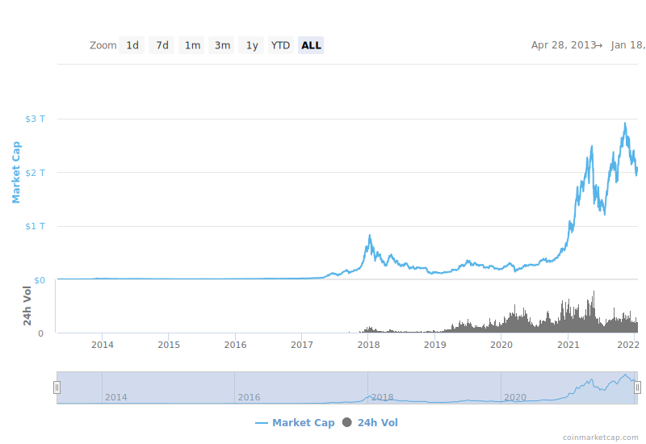
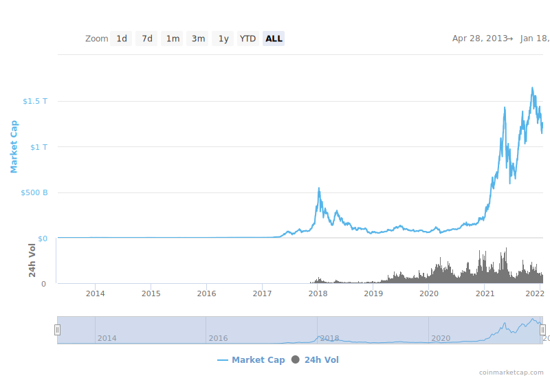

# CS 4501 ### Cryptocurrency ### Spring 2022 <p class='titlep'> </p> <div class="titlesmall"><p> <a href="http://www.cs.virginia.edu/~asb">Aaron Bloomfield</a> (aaron@virginia.edu)<br> <a href="http://github.com/aaronbloomfield/cccc">@github</a> | <a href="index.html">↑</a> | <a href="./course-introduction.html?print-pdf"><img class="print" width="20" src="../slides/images/print-icon.png" style="top:0px;vertical-align:middle;padding:0;border-radius:0"></a> </p></div> <p class='titlep'> </p> ## Course Introduction
# Contents [Motivation](#/motivation) [Course Structure and Logistics](#/course) [Honor Policy](#/honor) [Legal Issues](#/legal)
# Motivation
## If you bought Bitcoin... - ...in 2010 for $0.25 per BTC - Let's say you spent $100 - You would have owned 400 BTC - That would be worth $18 million today! - (assuming a price of $45k per BTC) - That is not likely to ever happen again... ## This course will not make you rich - It does not teach you about investing in cryptocurrency - Instead, it will focus on the technical aspects of cryptocurrency ## Coins Studied The course will focus on two primary coins / networks: - Bitcoin (BTC, ₿): the first real cryptocurrency and the most valuable; ASIC mineable - Ethereum (ETH, Ξ): significant improvements over Bitcoin with much more functionality; is (but shortly no longer) ASIC mineable <aside data-markdown class='notes'> ASIC = application-specific integrated circuit </aside> ## Coins Studied A few other coins will come up repeatedly: - Ravencoin (RVN): a "faircoin" that's a fork of Bitcoin, designed for NFTs; not ASIC mineable - Ergo (ERG): a "faircoin" designed with more cryptography and more features than Ethereum - Shiba (SHIB) and others: a 'token' coin on Ethereum - Tether (USDT): a "stablecoin" that is somewhat scandal-ridden and controversial; not mineable - ... and the top few on [2cryptocalc.com](https://2cryptocalc.com/) Let me know if there are any others you want me to go over... ## Cryptocurrency Market Cap  From [https://coinmarketcap.com/charts/](https://coinmarketcap.com/charts/) ## CC Market Cap w/o BTC  From [https://coinmarketcap.com/charts/](https://coinmarketcap.com/charts/) ## Bitcoin dominance  From [https://coinmarketcap.com/charts/](https://coinmarketcap.com/charts/)
# Course Structure and Logistics
## Instructional Staff  <p style='text-align:center'>Aaron Bloomfield</p> <p style='text-align:center'>Rice Hall, room 402<br> aaron@virginia.edu</p> ## Course resources - Collab: landing page, anonymous feedback, site email, etc. - External course materials: most of the course materials can be found online at [https://aaronbloomfield.github.io/ccc](https://aaronbloomfield.github.io/ccc) - Or via the github repo at [https://github.com/aaronbloomfield/ccc](https://github.com/aaronbloomfield/ccc) - External Collab tools: gradescope, Piazza, support requests, Panopto, etc. ## Contacting Us - Please fill out a support request instead - Linked to from the Collab landing page - Office hours will start next week - Anonymous feedback through Collab ## Contacting You - The [daily announcements slide set](daily-announcements.html) - If you miss lecture, you are responsible for checking it! - Anything else that is "urgent" will be posted to Piazza as an instructor note - VERY few notifications will be sent out as a course email ## Meetings - Lectures: M/W 3:30-4:45 in Thornton E303 - Lectures are required - There will be surprise pop quizzes in lecture - If you have to miss a lecture, there will be a Google form for you to fill out - Please don't email me or send in a support request! - That link is on the Collab landing page ## Expectations - Prerequisites: CS 3710, Introduction to Cybersecurity, with a grade of C- or higher - This is a strict pre-req! - You are assumed to be familiar with the [encryption & hashing slide set](https://aaronbloomfield.github.io/ics/slides/encryption.html#/) - If not, then please review it, as we are not review it all here - You are assumed to be familiar with the [cryptocurrency slide set](https://aaronbloomfield.github.io/ics/slides/cryptocurrency.html#/) - We will go over that in the next lecture - We realize that you may not have completed the cryptocurrency HW in CS 3710 - You are assumed to be familiar with Tor (from the [privacy slide set](https://aaronbloomfield.github.io/ics/slides/anonymity.html#/)) ## Homeworks - There will be a combination of: - Larger programming homeworks - Smaller homeworks (tutorials, readings, etc.) - Typically one of each will be assigned at any given time - But their due dates will be staggered - There will also be random in-class quizzes on the quizzes; if you are absent that day, you get a zero - Unless it's an emergency, you can only be excused if you fill out the excuse form BEFORE lecture with a valid reason ## HW submission: Gradescope - We will be using [Gradescope](https://gradescope.com) - All assignments will be ***autograded***, as I do not have the TA staff to grade it by hand - We will release specifications and test cases - Gradescope will use the same *type* of tests, but with different data - Many assignments will require you to deploy your code to a private Ethereum blockchain in addition to the Gradescope submission - You may submit as many times to Gradescope as you want before the deadline passes. - We will have a reasonable limit on the number of Ethereum blockchain deployments ## Piazza - We all know [Piazza](https://piazza.com) - If the e-mail settings default to "send annoying emails all the time", you can easily change this - In Piazza, in the upper-right, click on the gear/settings icon, select "Account/Email Settings", and then select "Edit Email Notifications" under "Class & Email Settings" - Rules - Don't post any code on it, period (that's an honor violation!) - Note that you can post anonymously to each other, but the course instructional staff will know who you are - If you start trolling other students on Piazza, I will permanently ban you from it - Please be respectful of your fellow students in the course! ## Development environment - You can use any development environment you want (Windows, Mac, Linux; IDEs are okay also) - You will have to use the [Remix IDE](https://remix.ethereum.org/) at some point - I will release a VirtualBox image that has the software configured - This will not work on M1 Macs - You are welcome to install the software on your own machine - We can point you in the right direction, but we cannot debug this - M1 Macs: the installation instructions will be given ## Nothing to buy! - Textbooks: Nope! Too expensive and too much of a scam - Cryptocurrency: also nope; not required for this course - If you want to buy it on your own, please wait until we discuss the legal and tax implications before doing so ## Course syllabus - It is available in the github repo; you can click [here](../uva/syllabus.html) to view it - It contains all the information covered so far, plus some more stuff ## Grades - Grades are computed by: - 15% class participation (in-class quizzes) - 50% homeworks - 15% midterm: Thursday, March 3rd, in class - 20% final exam: Tuesday, May 10th, from 2-5 ## Learning your names... I am determined to learn each of your (first) names So if you raise your hand in lecture, and I don't call on you by name, you have to say your first name before your question Don't be offended if it takes me a while -- there are 100 students in this course... ## Course Goals - Understand the theoretical aspects of cryptocurrency - Understand the basics of blockchain in general, and the details of a selected number of blockchains - Understand the uses of cryptocurrency and blockchain beyond that as a form of money - Understand the policy, ethical, legal, and tax implications of cryptocurrency - Be able to develop programs for a specific Blockchain - Implement a fully working modern cryptocurrency ## Topics before spring break - Course Introduction (this one) - Cryptocurrency overview - Encryption - Bitcoin - Mining - Ethereum & Solidity ## Topics after spring break The order (and format) are likely to change <table class="transparent"><tr><td> - Money, banking, payment systems - Wallets, storage, key management - Security in cryptocurrencies & blockchain - Privacy & anonymity - zk-SNARKs - Legal, policy, & ethical issues - Exchanges & mining pools - NTFs, tokens, etc. </td><td> - Disinformation, malware, attacks, evil-ness - Altcoins - Blockchain applications - Consensus protocols & fault tolerance - Cross-chain transactions - Proof-of-*X* (work, stake, storage, replication, spacetime, etc.) - Forks - High-performance blockchains - Concurrency in smart contracts </td></tr></table> ## Disclaimers, warnings, etc. - Course "roughness" - Patience - Auto-grading - Lack of TA support - I know nothing, Jon Snow ## Initial assignments - You need to fill out the course introduction Google survey - Link on the Collab landing page - Due next week (time/date TBA) - Start on [HW P1: Introductory HW](../hws/intro/index.html) - This is (essentially) the same as what was assigned in CS 3710: ICS - So you can use your code from that course - The only thing that may change is minor tweaks to the output format - You may want to wait until the [Cryptocurrnecy Overview](../slides/overview.html#/) slide set is discussed first - Due next week (time/date TBA)
# Honor Policy
## Class Honor Policy The University of Virginia Honor Policy in effect. In addition to the normal rules, we have additional rules (full details in the [course syllabus](syllabus.html)): 1. You may not look at the code of another student (past or present) for ANY reason 2. You may not try to hack my submission system 3. You may not discuss the midterm details to someone who has not already taken it 4. You may not release your source code online (including in a public github repo) ## Class Honor Policy, continued The University of Virginia Honor Policy in effect. In addition to the normal rules, we have additional rules (full details in the [course syllabus](syllabus.html)): 5. We realize we shouldn't have to say this, but we will not sign more than one conscientious retraction for a given student within one semester. 6. We thought this was obvious also, but apparently we have to say it: you can't submit somebody else's code as the main part of the assignment and claim it is valid because you cited that code. The point of the labs is for *you* to do the work, not for you to do a Google search. ## Class Honor Policy Any honor violation or cheating will be referred to the honor committee, and will result in <strong class="red">immediate failure</strong> for the course We have done this before, and we will do it again. Please don't test me on this. We will see the cheat-checking program later this semester, as we will have learned enough theory to understand how it works
# Legal Issues
## Disclaimer I am not a lawyer. But I have discussed this with UVA's lawyers. However, they are lawyers for me (as a UVA employee) but not for you (as a UVA student). ## Mining legality - Can you mine cryptocurrency at UVA? - Consider Virginia statute [6.2-1901](https://law.lis.virginia.gov/vacode/6.2-1901): > No person shall engage in the business of selling money orders or engage in the business of money transmission, whether or not the person has a location in the Commonwealth, unless the person obtains from the Commission a license issued pursuant to this chapter. ## Mining legality - Virginia statute [6.2-1901](https://law.lis.virginia.gov/vacode/6.2-1901) requires: - You get a license if you are in the *business* of money transmission - Bug if mining is not your business, then you are not directly targetted by that statute - Thus, so far, mining is fine in the state of Virginia. But... ## UVA's acceptable use - UVA has an [acceptable use policy](https://security.virginia.edu/acceptable-use) -- and policy [PRM-011](https://uvapolicy.virginia.edu/policy/PRM-011): <blockquote style="width:85%"> <p>Students are allowed reasonable use of University equipment when it is related to scholarship, research, and public service, and/or approved extracurricular activities. Such use requires approval of the appropriate equipment supervisor, provided the University incurs no unreasonable costs for materials, supplies, maintenance, and/or repairs.</p> </blockquote> ## UVA's acceptable use - This means you can NOT mine cryptocurrency that: - Uses UVA equipment - Either server-based machines or a loaned notebook - Uses UVA electricity - This means you are not allowed to mine in your dorm room, even on your own machine ## Legal permission - But... how to teach cryptocurrency without mining? - This course has received legal permission from UVA's general counsel to mine cryptocurrency, as long as ALL of the following are true: - The mining resource use is "reasonable" and necessary in pursuit of the academic goals of this course - The cryptocurrency mined has zero market value (a "fake" cryptocurrency) - This implies that it cannot be traded for any other "real" cryptocurrency (meaning one with a monetary value) ## Further permissions - ITS and InfoSec have also approved the use of "fake" cryptocurrency in this course, as long as... - Any mining that you do must ONLY use mining software or libraries that I approve - The reason is that there is a LOT of malware distributed through shady mining software - Any software linked to from an assignment for this course, or provided on the VirtualBox image, is thus considered approved for your use ## Tax implications - The IRS will ask this question on the IRS for 1040 ([source](https://stanfieldodell.com/irs-to-update-virtual-currency-question-for-2021/)): - "At any time during 2020, did you receive, sell, send, exchange or otherwise acquire any financial interest in any virtual currency?" - 2021 version: "At any time during 2021, did you receive, sell, exchange or otherwise dispose of any financial interest in virtual currency?" - This is why we aren't making you buy any cryptocurrency for this course - The "fake" cryptocurrency that you mine and trade in this course does not qualify as a 'yes' for that question... - ... as there is no "financial interest" with it since it has zero market value ## Can (should?) you mine cryptocurrency on your own? - Not on UVA equipment or on grounds! - ITS scans for this, and can revoke your computing access if they catch you - If you do it on your own off grounds... - Be sure to understand the tax implications involved